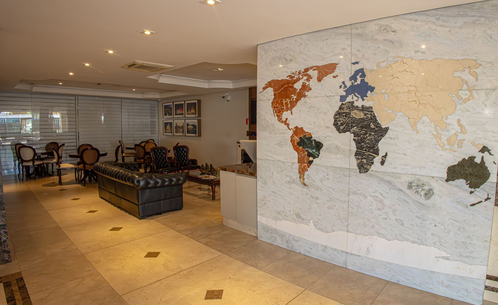
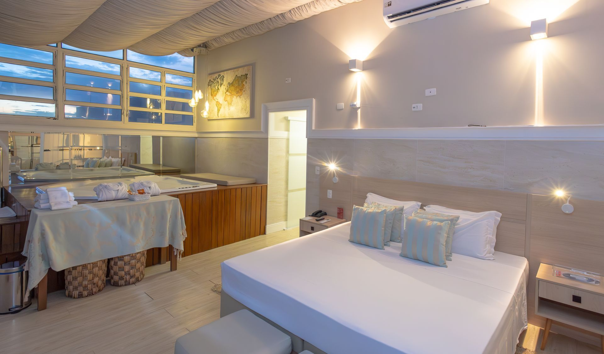
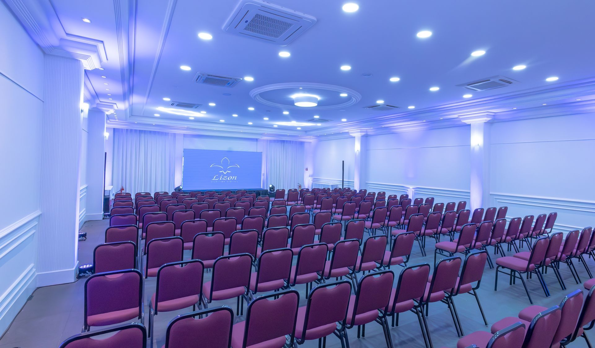
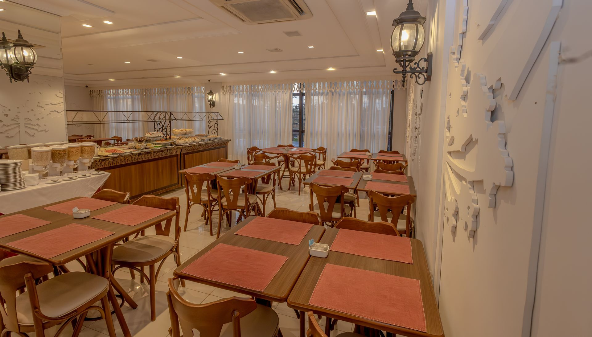
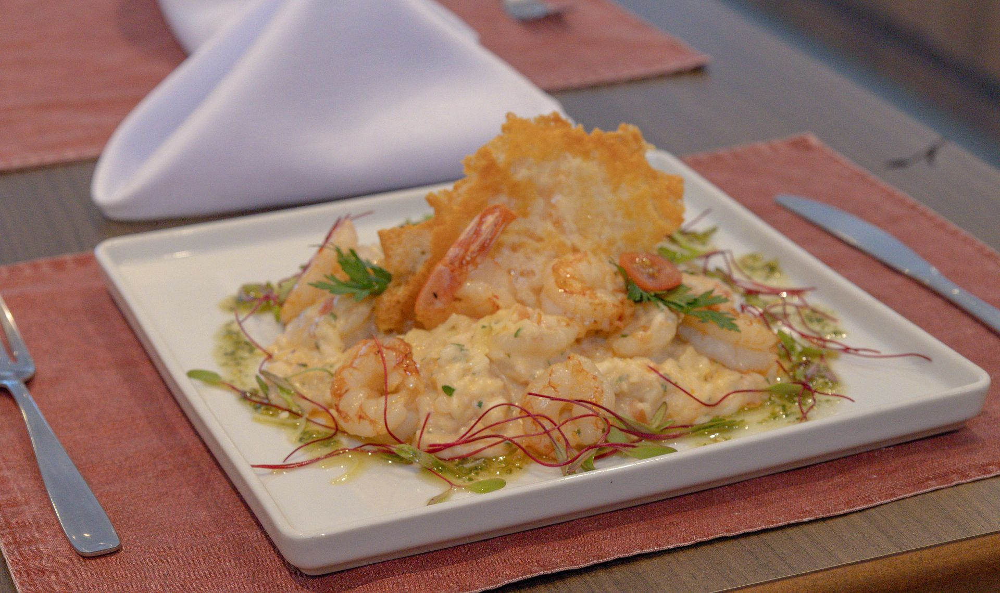

Uma base central para ficar, reunir e receber em Curitiba.
O Lizon Curitiba Hotel está no Centro da cidade, com quartos para 1 a 4 pessoas, estrutura para eventos, restaurante e recepção 24 horas.
HospedagemQuartos para 1 a 4 pessoas
Quartos para ficar de uma a quatro pessoas.
As acomodações do Lizon Curitiba Hotel recebem de uma a quatro pessoas, no mesmo endereço central da cidade. A recepção funciona 24 horas.
Consultar reserva
EventosReuniões, recepções e treinamentos

Estrutura para reunir, treinar e celebrar.
O Lizon Curitiba Hotel oferece infraestrutura para reuniões, recepções, seminários, workshops, treinamentos e eventos em geral, no mesmo endereço central da hospedagem.
Falar sobre um eventoRestauranteRestaurante e room service
Restaurante e room service no mesmo endereço.
O hotel conta com restaurante e serviço de quarto no endereço da Av. Sete de Setembro, no Centro.
Contato do restaurante

O que está incluído no endereço.
Serviços do Lizon Curitiba Hotel, no mesmo endereço central.
- Hospedagem
- Restaurante
- Eventos
- Salas de reunião
- Room service
- Recepção 24h
- Estacionamento
Três formas diretas de chegar até o Lizon.
Reserva, eventos e recepção têm caminhos de contato diretos: escolha o mais adequado para o seu assunto.